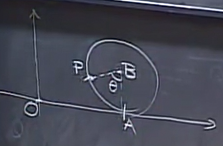
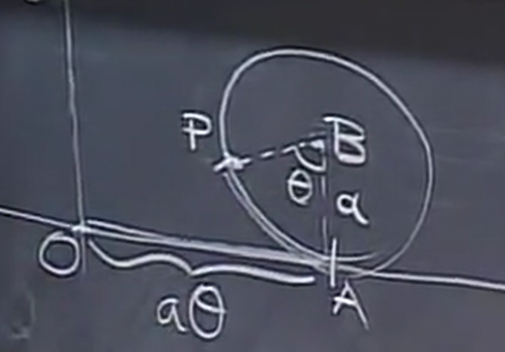
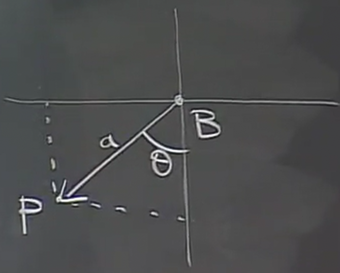

Lines and Parametric Curves
Table of Contents
1. Equations of Lines
We have seen that a line is formed from the intersection of two planes. Therefore, it is possible to define a line as the intersection between two equations of planes.
However, this isn't particularly convenient. Another way of thinking about this is by considering the trajectory of a moving point, in other words, parametric equations.
1.1. Given Two Points
A line can be defined by two points in space, say \(Q_0\) and \(Q_1\). We can define a parametric equation with time variable \(t\), where \(Q(t)\) is our moving point which we shall say moves at constant speed on the line. This speed will be chosen such that at \(Q(0)=Q_0\) and \(Q(1)=Q_1\).
The question now is, how do we find the position of the point at any time \(t\)? Realize that the vector \(\vec{Q_0Q(t)}\) is proportional to \(\vec{Q_0Q_1}\). In other words, since it takes one unit of time to move from \(Q_0\) to \(Q_1\), we can say that:
\[ \vec{Q_0Q(t)} = t\vec{Q_0Q_1} \]
Now, say that the coordinates of \(Q(t)\) are \(x(t),y(t),z(t)\), the coordinates of \(Q_0\) are \(a_0,b_0,c_0\), and the coordinates of \(Q_1\) are \(a_1,b_1,c_1\). Therefore, we can say that:
\begin{aligned} x(t) - a_0 &= (a_1-a_0)t \\ y(t) - b_0 &= (b_1-b_0)t \\ z(t) - c_0 &= (c_1-c_0)t \end{aligned}Isolating, we get
\begin{aligned} x(t) &= a_0+(a_1-a_0)t \\ y(t) &= b_0+(b_1-b_0)t \\ z(t) &= c_0+(c_1-c_0)t \end{aligned}1.2. Intersection with a Plane
We can use our parametric equations to consider the question: given a plane, does the line intersect with the plane, and if so, where?
An important insight is that the equation of a plane divides the space into two parts. A point at \(ax+by+cz
To find when the line intersects the plane with our parametric equations, we can simply plug our equations for \(x(t),y(t),z(t)\) in for \(x,y,z\) in our plane equation. We can then isolate \(t\) to get the time the point intersects the plane, and then plug that back into \(Q(t)\) to find the point at which it intersects the plane.
There are also cases when we plug our equations for \(x(t),y(t),z(t)\), we get a contradiction (e.g. \(13=7\)). This tells us that there are no solutions, in other words, the line is parallel to the plane and will never intersect. Similarly, if we get something that is always true, there are infinite solutions; in other words, the line is contained within the plane.
2. General Parametric Equations
Now, we shall explore parametric equations more generally. A parametric equation is a function that describes some characteristic, such as the coordinates of a point, using one or more independent variables, known as parameters, such as time \(t\) or angle \(\theta\).
2.1. Cycloid
Consider a cycloid function, which is the trajectory when you consider a fixed point on a wheel as it rolls forward, like so:

In particular, can we find the position of this point, \(x(\theta),y(\theta)\), where \(\theta\) is the angle by which the wheel has rotated? We use \(\theta\) here instead of \(t\) because time is not important: the thing that is changing here is the rotation of the wheel.
Now, consider the vector \(\vec{OP}\), where \(O\) is the origin and \(P\) is the point on the wheel after it has rotated an angle \(\theta\):

Now, we can express this vector as the sum of some other vectors:
\[ \vec{OP} = \vec{OA} + \vec{AB} + \vec{BP} \]
Now, let's call the radius of the wheel \(a\). As the ball moves without slipping, the distance it moves on the ground should be the same as the arc length of the wheel that has rolled past, which is \(a\theta\):

Therefore, we now know that:
\begin{aligned} \vec{OA} &= \langle a\theta,0 \rangle \\ \vec{AB} &= \langle 0,a \rangle \end{aligned}Now, consider \(\vec{BP}\):

Using trigonometry, we can see that the components of \(\vec{BP}\) are:
\[ \vec{BP} = \langle -a\sin\theta, -a\cos\theta \rangle \]
Considering all of this, we can now say that:
\[ \vec{OP} = \langle a\theta - a\sin\theta, a-a\cos\theta \rangle \]
Therefore, our parametric equations are:
\begin{aligned} x(\theta) &= a\theta - a\sin\theta \\ y(\theta) &= a-a\cos\theta \end{aligned}Now, if we take the wheel radius to be 1, and for the wheel to be rolling at unit speed, we can write the following position vector:
\[ r(t) = \langle t-\sin t, 1- \cos t \rangle \]